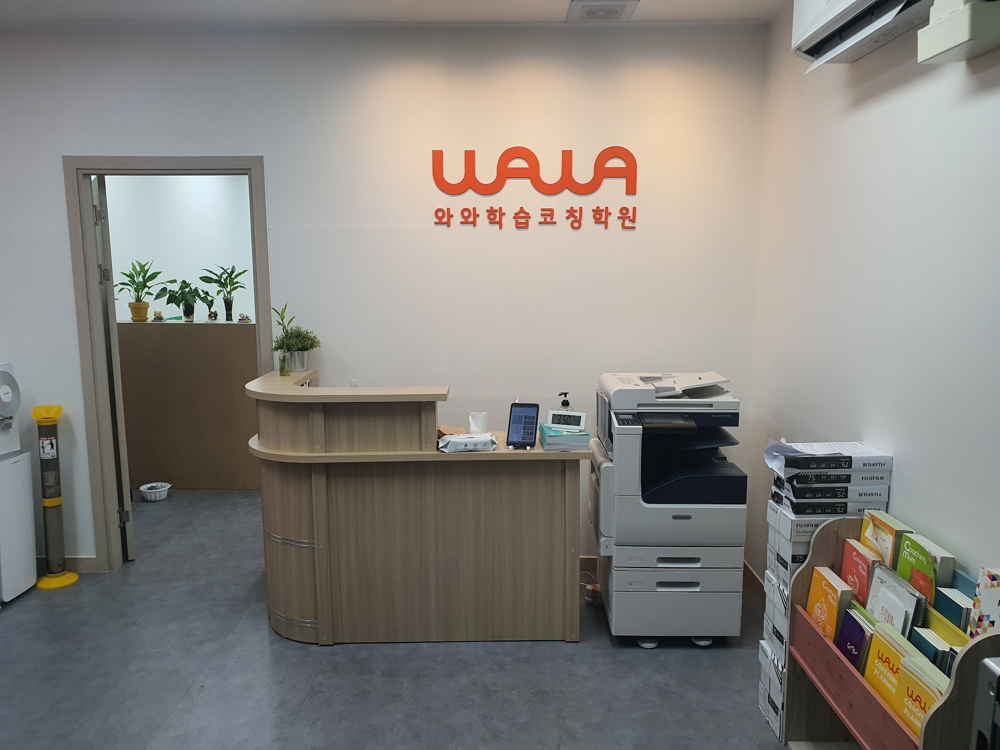
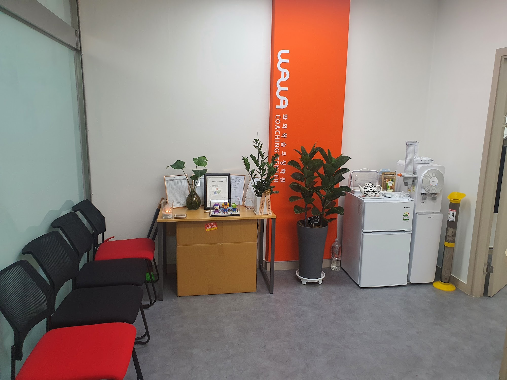
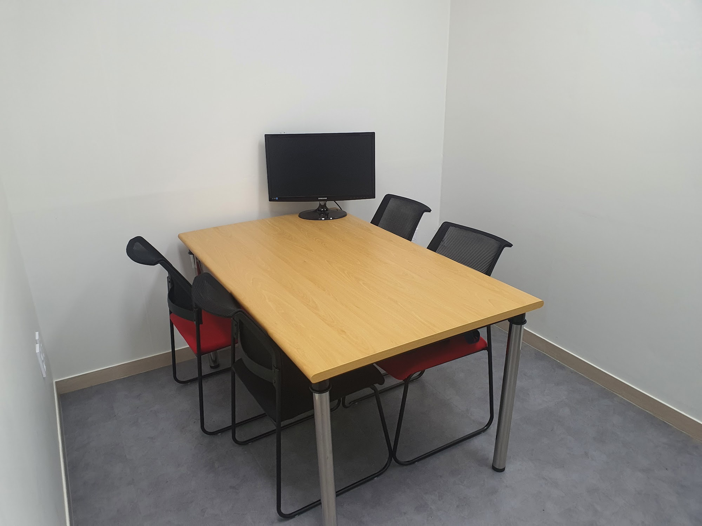
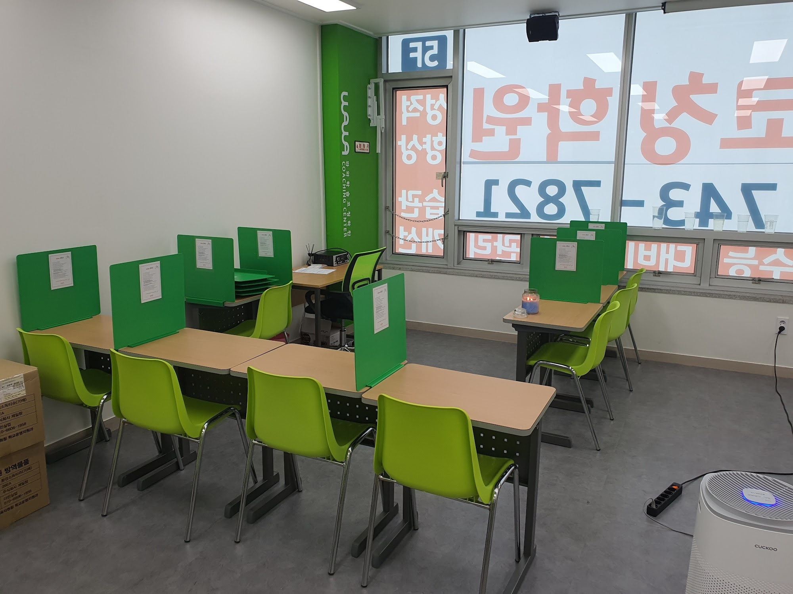

안녕하세요, 경남 창원시 진해구 석동의 와와학습코칭 석동점입니다. 석동로 세븐코아 건물 5층으로 올라오시면 바로 이 데스크가 보입니다. 사진에서 한 번 봐 주셨으면 하는 곳은 오른쪽 아래 책꽂이입니다.
저 칸에 꽂힌 것은 아이들 문제집이 아닙니다. 코칭플래너와 코칭맘 책자, 그러니까 부모님이 가져가시는 자료입니다. 학원 안내문 꽂이를 놓을 수도 있는 자리에 굳이 저걸 둔 이유가 있습니다. 석동점에서는 아이만 데려다 놓고 끝나는 상담을 하지 않기 때문입니다.

기다리는 자리를 복도에 두지 않았습니다
데스크를 지나면 바로 이 공간이 나옵니다. 의자 몇 개와 정수기, 그리고 주황색 브랜드 배너가 있는 대기 공간입니다. 작은 공간이지만 석동점이 신경 쓴 곳입니다.
상가 학원에서 흔히 보는 모습이 있습니다. 부모님이 아이를 데리러 오셔서 복도나 계단참에 서서 기다리시는 장면입니다. 그러면 선생님과 이야기를 나눌 일이 있어도 지나가며 두세 마디로 끝납니다. 오늘 아이가 어땠는지, 지난주에 말씀드린 게 어떻게 됐는지는 못 나옵니다.
앉을 자리가 있으면 대화의 길이가 달라집니다. 석동점 선생님들은 아이를 기다리시는 동안 "어머니, 이번 주에 이건 좀 나아졌어요" 정도는 그 자리에서 말씀드립니다. 작은 테이블 위 액자에는 센터 운영 안내와 학습 일정이 놓여 있어, 궁금하신 걸 그 자리에서 확인하실 수 있습니다.

진짜 이야기는 문을 닫고 합니다
대기 공간에서 나눌 수 있는 이야기에는 한계가 있습니다. 아이가 지나다니고 다른 부모님도 계신 자리에서 "우리 아이가 수학을 3학년 것부터 다시 봐야 할 것 같다"는 말씀을 드리기는 어렵습니다. 그래서 석동점에는 문이 달린 상담실이 따로 있습니다.
사진 속 방입니다. 테이블 하나에 의자 네 개, 벽 쪽에 모니터가 있는 것이 전부입니다. 화려할 것 없는 방이지만 여기서 세 가지를 합니다.
- 처음 오셨을 때 — 학습 진단 결과 보기. 모니터로 진단 결과를 같이 봅니다. 점수만 말씀드리면 "우리 애가 수학을 못하는군요"에서 끝납니다. 화면을 같이 보면서 어느 단원, 어떤 유형에서 막히는지를 짚어 드리면 이야기가 구체적으로 바뀝니다.
- 다니는 중 — 정기 상담. 성적표가 아니라 아이가 쌓아 온 학습 기록을 놓고 이야기합니다. 지난 상담 때 정한 것이 지켜졌는지부터 확인합니다.
- 일이 생겼을 때 — 부모님만 오시는 상담. 아이가 요즘 이상하다, 갑자기 학원 가기 싫다고 한다 같은 이야기는 아이 앞에서 못 하십니다. 이럴 때는 부모님만 오셔도 됩니다.
의자가 네 개인 것도 그냥 둔 게 아닙니다. 아이·어머니·아버지·코치가 같이 앉는 자리를 염두에 둔 숫자입니다. 초등 고학년이나 중학생쯤 되면, 어른들끼리 정하고 통보하는 방식으로는 아이가 움직이지 않습니다. 본인이 그 자리에 앉아 있어야 합니다.
부모님께 자료를 드리는 이유
다시 데스크 옆 책꽂이 이야기입니다. 상담을 아무리 잘해도 한 시간짜리 대화입니다. 집에 돌아가시면 잊힙니다. 그래서 석동점은 상담에서 나온 이야기와 이어지는 읽을거리를 함께 드립니다.
여기서 부모님들이 가장 많이 물으시는 것을 정리하면 대개 이 세 가지로 좁혀집니다.
- "공부하라고 말을 안 할 수가 없어요." — 말을 줄이는 대신 물어보는 문장으로 바꾸는 쪽을 권해 드립니다. "했니?" 대신 "오늘은 뭐부터 할 거야?" 쪽입니다.
- "몇 시간을 앉아 있는데 성적이 그대로예요." — 앉아 있는 시간과 공부한 시간은 다릅니다. 센터에서는 무엇을 몇 문제 풀었는지로 기록합니다. 집에서도 시간이 아니라 분량으로 확인해 주시면 훨씬 정확합니다.
- "숙제를 봐 줘야 하나요?" — 답을 맞춰 주시는 건 권해 드리지 않습니다. 틀린 문제가 어디서 났는지는 센터에서 보는 게 낫습니다. 집에서는 가방을 여는 시간만 정해 주셔도 충분합니다.
이 이야기를 자료로 한 번 더 읽으시면, 다음 상담 때 대화가 처음부터 다시 시작되지 않습니다. 부모님과 코치가 같은 말을 쓰게 되는 것이 석동점이 바라는 상태입니다.

이야기한 것이 학습실에서 지켜집니다
상담실에서 정한 것은 이 방에서 실행됩니다. 책상마다 초록 가림판이 있고, 각 자리에는 그 아이가 지킬 내용을 적은 종이가 한 장씩 붙어 있습니다. 상담 때 "이번 달에는 이걸 먼저 하기로 하자"고 정한 것이 그 자리에 붙어 있는 셈입니다.
그래서 부모님이 다음 상담에 오셨을 때 "그래서 그건 어떻게 됐나요?"라는 질문에 코치가 바로 답할 수 있습니다. 정해 놓고 잊는 일이 생기지 않습니다. 창이 넓어 낮에도 밝고, 안쪽에는 공기청정기를 두어 겨울에도 창을 오래 닫아 두지 않아도 되게 했습니다.
석동은 초등에서 중등으로 넘어가는 구간이 중요합니다
석동점이 주로 만나는 아이들은 석동초·동부초와 석동중에 다닙니다. 고등학교는 조금 나가야 하는 위치라, 석동점이 집중하는 구간은 자연스럽게 초등 고학년부터 중학교까지입니다.
이 구간이 부모님 입장에서 가장 답답한 시기이기도 합니다. 초등 때는 점수가 눈에 잘 안 보여서 괜찮은 줄 알고 지나가는데, 중학교에 가서 처음 등수가 적힌 성적표를 받으면 그제야 놀라시는 경우가 많습니다.
- 초등 고학년 — 선행보다 먼저 혼자 앉아 있는 시간을 만듭니다. 30분을 못 앉는 아이에게 두 시간짜리 계획은 의미가 없습니다.
- 중1 — 시험이 본격적으로 시작되기 전에 시험 준비하는 방법 자체를 익히게 합니다. 범위를 나누고, 날짜를 배분하고, 틀린 것을 다시 보는 순서입니다.
- 중2·중3 — 여기서부터는 과목별로 갈립니다. 수학은 어디서부터 비었는지를 찾아 내려가고, 영어는 문법과 독해 중 어느 쪽이 무너졌는지를 나눠 봅니다.
학년이 올라갈수록 부모님이 직접 해 주실 수 있는 일은 줄어듭니다. 대신 무슨 일이 일어나고 있는지 아는 것은 계속 필요합니다. 석동점이 상담실과 자료에 공을 들이는 이유가 여기에 있습니다.
석동점 찾아오시는 길
와와학습코칭 석동점은 경남 창원시 진해구 석동로 51, 세븐코아 504호에 있습니다. 상가 건물이라 아이 혼자 오갈 수 있고, 엘리베이터에서 내리시면 바로 데스크가 보입니다.
학습 진단과 상담은 무료입니다. 아이와 함께 오셔도 되고, 부모님만 먼저 오셔서 이야기를 나누셔도 됩니다. 초등 고학년부터 중등까지 영어·수학을 중심으로 관리합니다.
"학원에 보내는데 정작 뭘 하고 있는지는 모르겠다"는 마음이 드신 적이 있다면, 상담실에 한 번 앉아 보고 가셔도 좋겠습니다. 오시는 길에 책꽂이에서 한 권 집어 가시는 것도 잊지 마시고요.